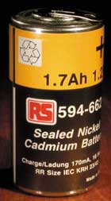
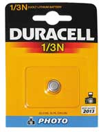
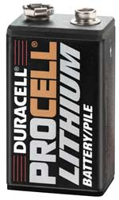
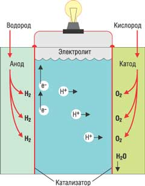
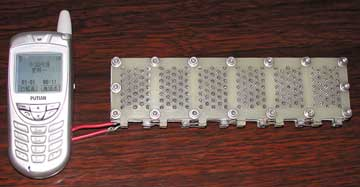

Алексей Борзенко
Одна из проблем, стоящая перед разработчиками мобильных устройств, заключается в создании автономного источника питания, который обеспечил бы как можно большее время работы устройства без подзарядки. По оценкам аналитиков из европейской ассоциации European Portable Battery Association (EPBA), производство элементов электропитания ежегодно удваивается. Самые распространенные на сегодня типы электрохимических источников тока - это никель-кадмиевые (NiCd), никель-металлгидридные (NiMH), литий-ионные (Li-Ion) и литий-полимерные (Li-Polymer). Они используются в сотовых и беспроводных телефонах, видеокамерах и портативных компьютерах, карманных ПК и системах глобального позиционирования GPS, медицинской аппаратуре и бытовой технике.
Как известно, химические источники тока вырабатывают электрическую энергию за счет прямого преобразования химической энергии окислительно-восстановительных реакций. Они, как правило, состоят из двух электродов (один содержит окислитель, а другой - восстановитель), контактирующих с электролитом. Совокупность электролита и электродов образует электрохимическую систему. На отрицательном электроде восстановитель окисляется, и свободные электроны по внешней цепи (если она существует, разумеется) переходят к положительному электроду, где участвуют в реакции восстановления окислителя. Химические источники тока делятся на гальванические элементы (первичные) и аккумуляторы (вторичные).
В первичных источниках тока электричество вырабатывается посредством химической реакции, постоянно изменяющей элемент питания. В процессе разрядки (извлечения электричества из элемента) анод, катод и электролит изменяются необратимо, и по окончании реакции эти элементы более не работоспособны. Во вторичных (перезаряжаемых) источниках тока химические реакции могут протекать и в обратном направлении, при этом элемент будет накапливать электричество, а не тратить его. В отличие от источников первого типа, эти устройства аккумулируют электричество, потому и называются аккумуляторами. Часто их еще называют перезаряжаемыми (rechargable) устройствами.
В зависимости от вида химической реакции одинаковые элементы, как правило, могут давать напряжение от доли вольта до 3 В. Элементы, дающее напряжение свыше 3 В, обычно составные; под словом "батарея" здесь понимают несколько включенных соответствующим образом (последовательно, параллельно и т. д.) элементов.
Определяющий фактор для всех источников тока, используемых в мобильных устройствах, - портативность. Она подразумевает не только небольшие объем и массу, присущие данным устройствам, но и высокую надежность, а также длительное время автономной работы. К основным параметрам аккумуляторного устройства в первую очередь относится энергетическая плотность (или удельная энергия по массе), измеряемая в ватт-часах на килограмм массы. Помимо этого, существует еще ряд параметров, важных для всех аккумуляторов, например, количество циклов заряд-разряд, внутреннее сопротивление, номинальное напряжение, разрядные характеристики, срок хранения, стабильность напряжения под нагрузкой и т. д.
Устройство элемента питания таково, что они могут давать лишь ограниченный электрический ток. Теоретически, если бы химическая реакция в элементе протекала мгновенно, элемент мог бы вырабатывать, условно говоря, неограниченный ток. Но существуют факторы, ограничивающие скорость прохождения химических реакций, - это в первую очередь вид реакции, устройство элемента и площадь, на которой протекают эти химические реакции. Размер элементов питания определяет выбор химических реакций, а следовательно, влияет и на вырабатываемый ток. Чем больше элемент, тем больший ток он способен выработать; поэтому сверхмощные устройства зачастую требуют более крупных элементов. Например, батареи размера D производят больше тока, чем гальванические элементы размера AA. Все эти факторы можно свести к одному: на вырабатываемый ток влияет эквивалентное внутреннее сопротивление элемента. Чем оно ниже, тем выше ток.
Емкость батарейки вычисляется как количество электричества, или электрического заряда, вырабатываемого при определенных условиях полностью заряженной батарейкой. Как и в случае напряжения, реальный заряд батарейки изменяется в зависимости от температуры и тока разрядки. В качестве единицы измерения емкости батареек служит кулон (единица измерения электрического заряда, названная в честь французского физика Шарля Огюста Кулона). Емкость указывает на количество времени, в течение которого элемент питания способен вырабатывать определенный электрический ток: 1 Кл равен 1 А, произведенному за 1 с. На практике же емкость батареек обычно измеряется в ампер-часах. Общее количество энергии батарейки вычисляется как емкость, умноженная на напряжение, и измеряется в ватт-часах.
Все подзаряжаемые элементы питания плохо переносят перегрев, не важно, был он вызван плохими условиями хранения или неправильной подзарядкой. Сильный перегрев в результате неправильной подзарядки может испортить практически любой аккумулятор.
Базовые параметры аккумуляторовАккумулятор характеризуется обычно следующими основными параметрами: типом электрохимической системы, напряжением, электрической емкостью, внутренним сопротивлением, током саморазряда и сроком службы. Причем в зависимости от сферы применения на первый план выступают то одни параметры, то другие. Напряжение аккумулятора определяется тем устройством, для питания которого он предназначен. Если один элемент не обеспечивает требуемое значение напряжения, аккумулятор собирается из нескольких элементов, соединенных последовательно. Напряжение аккумулятора в процессе работы не постоянно: оно максимально сразу после окончания заряда, а затем в процессе работы или хранения уменьшается. В конце концов оно падает до такой величины, что запитываемое устройство не включается или автоматически выключается. При оценке состояния аккумулятора измерять его напряжение необходимо под той нагрузкой, на которую он рассчитан. Номинальная электрическая емкость - это то количество энергии, которым аккумулятор теоретически должен обладать в заряженном состоянии. Измеряется емкость в ампер-часах (А.ч) или миллиампер-часах (мА.ч) и обозначается буквой C. Значение емкости указывается на этикетке аккумулятора или зашифровано в обозначении его типа. В процессе эксплуатации емкость аккумулятора уменьшается. Скорость ее уменьшения зависит от типа электрохимической системы, технологии обслуживания в процессе работы, используемых зарядных устройств, условий и срока эксплуатации. Внутреннее сопротивление аккумулятора (сопротивление источника тока) определяет его способность отдавать в нагрузку некоторый ток. При низком значении внутреннего сопротивления аккумулятор способен отдать в нагрузку больший пиковый ток (без существенного уменьшения напряжения на его выводах), а значит, и большую пиковую мощность, в то время как высокое значение сопротивления приводит к резкому уменьшению напряжения на выводах аккумулятора при резком увеличении тока нагрузки. Явление саморазряда в той или иной степени характерно для всех типов аккумуляторов и заключается в потере ими емкости после того, как они были полностью заряжены. Для количественной оценки саморазряда удобно использовать величину потерянной ими за определенное время емкости, выраженную в процентах от значения, имеющегося сразу после зарядки. Промежуток времени для оценки, как правило, принимается равным одним суткам и одному месяцу. Саморазряд аккумуляторов зависит от качества используемых материалов, технологического процесса изготовления, типа и конструкции аккумулятора. Ток саморазряда резко возрастает при повышении окружающей температуры, повреждении внутреннего устройства аккумулятора из-за неправильного обслуживания и вследствие процесса старения. Срок службы аккумулятора принято оценивать по количеству циклов заряда-разряда, которые он выдерживает в процессе эксплуатации без значительного ухудшения основных параметров (емкости, саморазряда и внутреннего сопротивления). Срок службы зависит от таких факторов, как методы зарядки, глубина разряда, процедура обслуживания или ее отсутствие, температура и электрохимическая природа аккумулятора. Кроме того, он определяется временем, прошедшим со дня изготовления самого устройства.
|
Аккумуляторы
Никель-кадмиевые
До недавнего времени самыми распространенными на компьютерном и электронном рынках были никель-кадмиевые аккумуляторы (NiCd, рис. 1), нашедшие широкое применение еще в 50-е годы. Катоды в таких элементах сделаны из никеля, а аноды - кадмиевые. Данные аккумуляторы характеризуются энергетической плотностью порядка 40-60 Вт.ч/кг и обеспечивают до 1500 циклов заряд-разряд (до двух лет эксплуатации). Несмотря на довольно высокую скорость саморазряда (до 20% в месяц), данные источники тока весьма дешевы и хорошо зарекомендовали себя в эксплуатации.
|  | Рис. 1. Никель-кадмиевый аккумулятор.
|
Выходное напряжение большинства химических элементов уменьшается по мере разряда. Это вызвано тем, что реакции, происходящие внутри батарейки, увеличивают ее внутреннее сопротивление. Никель-кадмиевые элементы обладают очень низким внутренним сопротивлением, а это означает, что они могут вырабатывать высокие токи, которые не сильно изменяются по мере разрядки батарейки. Соответственно такие элементы могут поддерживать практически постоянное напряжение до тех пор, пока целиком не разрядятся. Но как только они разряжаются целиком, напряжение резко падает.
Одним из основных недостатков никель-кадмиевых аккумуляторов считается эффект памяти. Дело в том, что некоторые элементы, не будучи полностью разряженными, при дозарядке могут терять мощность. Химия объясняет такой эффект просто - в результате преждевременной перезарядки на анодах элементов образуются частицы кадмия, уменьшающие площадь реакции. Их возникновение приводит к эффекту химической памяти, который состоит в том, что запоминается вторичное состояние разряда аккумулятора. Когда аккумулятор разряжается до этого состояния, мощность его резко падает, несмотря на оставшуюся емкость. Если такой элемент продолжать заряжать из этого состояния, ситуация только усугубляется (будет сложнее привести аккумулятор в нормальное состояние). При последующих циклах перезарядки из этого состояния батарея еще лучше его "запомнит". Для того, чтобы целиком восстановить емкость аккумулятора и избавиться от эффекта запоминания, необходимо разряжать аккумулятор так, чтобы он миновал состояние вторичного разряда.
Никель-металлгидридные
Как известно, некоторые металлические сплавы могут содержать атомарный водород в объемах, в тысячи раз превосходящих собственные. Эти сплавы и называются гидридами. В хорошо продуманных системах гидриды позволяют хранить много водорода, который может вступить в обратимые реакции. В большинстве аккумуляторов, использующих гидридные катоды, аноды сделаны из никеля - как и в никель-кадмиевых. В качестве электролита в таких элементах обычно используется разбавленный раствор гидроксида калия. При замене кадмия гидридом достигаются некоторые преимущества. Во-первых, конечно же, это отсутствие токсичного кадмия, а во-вторых, то, что у аккумулятора не должен наблюдаться эффект памяти.
Никель-металлгидридные аккумуляторы, часто обозначаемые как NiMH, все же несовершенны. Основной недостаток таких элементов - высокая (в сравнении с никель-кадмиевыми элементами) скорость саморазряда. Никель-металлгидридные аккумуляторы могут выдержать большое число циклов подзарядки, обычно до 500, но все равно по этому показателю с никель-кадмиевыми их не сравнить.
Литий-ионные
Литий-ионные аккумуляторы (рис. 2) были изобретены еще в начале 40-х годов, однако их широкое промышленное использование началось только полвека спустя. Как известно, литий - химически активный металл, поэтому создатели аккумуляторов предложили использовать его в ионном состоянии. В созданных устройствах ионы лития находятся в активных веществах электродов, а не в металлических пластинах. Обычно в литий-ионных аккумуляторах анод сделан из угля, а катод - из литийкобальтдиоксида. В качестве электролита, как правило, используется раствор соли лития.
|  | Рис. 2. Литиевый элемент.
|
Подобные аккумуляторы обеспечивают довольно высокую энергетическую плотность (100 Вт.ч/кг), за которую, правда, приходится и платить немало. Этот тип батарей - один из самых дорогих, хотя именно они находят применение в портативных компьютерах, современных камкодерах, последних моделях сотовых телефонов и других телекоммуникационных устройствах. Литий-ионные батареи обеспечивают от 300 до 500 циклов заряд-разряд.
Стоит отметить, что литий-ионные аккумуляторы работают в ноутбуках без подзарядки в полтора раза дольше никель-металлгидридных. Кроме того, в литий-ионных элементах не наблюдаются эффекты памяти, которыми славились ранние никель-кадмиевые элементы. С другой стороны, внутреннее сопротивление у современных литиевых элементов выше, чем у никель-кадмиевых, соответственно они не могут обеспечить больших токов. Несмотря на то, что литий-ионные элементы выдерживают многократные подзарядки, такие устройства имеют срок жизни меньше, чем те, в которых используется никель.
"Скоростной" аккумуляторИнженеры корпорации Toshiba (http://www.toshiba.co.jp) создали прототипы батарей, которые заряжаются примерно в 60 раз быстрее нынешних литий-ионных аккумуляторов. Процесс зарядки последних происходит с поглощением ионов на отрицательном электроде, разряд же сопровождается перемещением ионов от "минуса" к "плюсу". При зарядке традиционные литий-ионные батареи набирают емкость со скоростью 2-3% от максимальной в минуту. В прототипах Toshiba отрицательный электрод выполнен из вещества, повышающего упомянутый показатель до 80% в минуту. Созданы два прототипа: батарея размерами 3,8х62х35мм, массой 16 г и емкостью 600 мА.ч и более крупный элемент со следующими характеристиками: 6,5х110х70 мм, 95 г, 3200 мА.ч. Как утверждается, меньший аккумулятор сохраняет 99% емкости после 1000 циклов заряд-разряд. Коммерческий вариант "турбобатарей" для промышленных применений в компании рассчитывают выпустить в будущем году, а в дальнейшем планируется создать и модификации для портативной электроники. |
Литий-полимерные элементы (Lithium Polymer)
Такие аккумуляторы могут служить недорогой заменой своих литий-ионных собратьев. Они обладают еще более высокой энергетической плотностью (175 Вт.ч/кг) и малым током разряда, но их использование ограничено низким током нагрузки. Типичное число циклов заряд-разряд не превышает 150.
Если в традиционных литий-ионных элементах используется жидкий электролит, в твердополимерных элементах электролит запечатан в полимерную пластиковую прокладку, находящуюся между электродами аккумулятора. В качестве электролита используются полимерные композиционные материалы (такие, как полиакрилонитрил), содержащие соли лития. Поскольку это не жидкость, а твердый материал, новые аккумуляторы не требуют громоздких цилиндрических корпусов, как у традиционных элементов. Вместо этого элементы можно выпускать в форме плоских многогранников, которые проще уместить в батарейные отсеки ноутбуков (рис. 3).
|  | Рис. 3. Литиевая батарея.
|
Спецификация Smart Battery
Для оптимизации подзарядки и для увеличения срока службы батарейки зарядные устройства должны "знать" степень заряда батарейки, температуру и другие физические параметры, учитывать предыдущие подзарядки. Корпорации Duracell (http://www.duracell.com) и Intel (http://www.intel.com) совместно разработали систему "умных" батареек (Smart Battery) - спецификация этих устройств в первой версии (Smart Battery Data Specification, Version 1.0) вышла 15 февраля 1995 г. Она позволила упорядочить процессы заряда батареек с помощью добавления отслеживающей схемы в батареи и передачи стандартных сигналов на зарядное устройство.
Система Smart Battery определяет несколько уровней, распределяющих взаимодействие между батареей, зарядным устройством и компьютером. Кроме того, она обеспечивает недорогой канал связи между этими устройствами, называемый системной шиной (System Management Bus, SM Bus). Кроме физического соединения, спецификация определяет протокол обмена сообщениями и формат сообщений. В частности, спецификация интеллектуальных батарей определяет информацию об аккумуляторе, которую она может передать зарядному устройству, а также задает формат сообщений для ее передачи. В частности, зарядное устройство может получать информацию о химических процессах, емкости, напряжении и даже об упаковке батареи. Сообщения содержат не только информацию о текущем состоянии зарядки элемента, но и историю всех предыдущих циклов подзарядки. Поэтому зарядное устройство может предсказывать срок службы элемента. Спецификация не зависит от используемых в элементе химических процессов и от устройства отслеживающей схемы. Единственное, что должно четко соблюдаться, - соединение с шиной и формат сообщений.
В дополнение к Smart Battery был создан стандарт интеллектуального зарядного устройства (Smart Battery Charger), который, помимо описания данных, передаваемых между зарядным устройством и аккумулятором, еще и определяет отношения между "интеллектуальными" батареями и различными типами зарядных устройств. Кроме того, он описывает системную шину и соответствующий стандарт интерфейса для BIOS, который предоставляет управление системой программному обеспечению компьютера и операционной системе.
Практически все современные ноутбуки используют батареи, соответствующие этой спецификации, так как управление батареями входит в состав спецификаций ACPI (Advanced Configuration and Power Interface). Поддержка ACPI требуется для совместимости с последними версиями Windows. С помощью этого интерфейса производители компьютеров могут выбирать один из двух стандартов управления питанием: Smart Battery или интерфейс управления батареями CMBatt (Control Method Battery Interface), описанный как часть стандарта ACPI. "Умная" батарея предоставляет аппаратный интерфейс (встроенный контроллер с регистрами), к которому ОС компьютера может получить доступ через системную шину. Интерфейс CMBatt добавляет встроенный язык управления стандарта ACPI более высокого уровня, называемый AML (ACPI Machine Language). Он позволяет управлять работой аккумуляторов (равно как питанием системы и ее конфигурацией) с помощью или без помощи встроенного контроллера. Производители батарей и компьютеров преобразуют свои инструкции по подзарядке батареек и по отслеживанию состояния заряда в код AML, который, в свою очередь, предоставляет информацию ОС компьютера. Использование языка AML дает производителям широкие возможности - один и тот же код может управлять разными типами батарей и интерфейсами связи.
Топливные элементы
Усилия, направленные на сокращение энергопотребления портативных ПК, коснулись большинства компонентов электронных устройств. Технологии, созданные за последние годы, включая экраны из органических светодиодов, процессоры, регулирующие свое быстродействие, накопители с малым энергопотреблением и энергетически эффективное ПО, привели к значительному снижению потребляемой мощности и тем самым продлили срок службы источников тока в большинстве мобильных устройств.
Фирмы-производители источников электропитания также совершенствовали свои технологии, постоянно улучшая характеристики существующих химических источников тока. Так, с момента выпуска литиевых батарей их емкость увеличилась более чем в два раза. Если пять лет назад аккумуляторы в ноутбуках работали всего 2 ч, то теперь они служат по 5 ч и более. Длительный срок службы источников питания стал одним из основных преимуществ, отмечаемых пользователями. Однако сами устройства, потребляющие электроэнергию, становятся все сложнее и требуют все больше и больше энергии.
Кроме того, многие эксперты говорят о том, что совершенствовать существующие технологии скоро будет практически невозможно, так как теоретический максимум для ряда используемых электрохимических систем будет достигнут буквально через пару лет. Дело в том, что лучшие из современных технологий элементов питания в силу химических ограничений допускают усовершенствование всего на 15-25%. Для дальнейшего улучшения характеристик производителям подобных устройств придется комбинировать традиционные источники тока с другими технологиями.
Таким образом, можно констатировать: хотя производители электроники добились значительных успехов, заставляя свои устройства обходиться меньшими запасами энергии, одной из главных причин недовольства потребителей по-прежнему остается короткий срок службы источников питания, особенно в портативных устройствах. Дело в том, что функциональность мобильных устройств в последние годы растет просто взрывными темпами и приближается к функциональности обычных, стационарных решений. Именно поэтому производители спешат найти способы замены традиционных никель-кадмиевых и литиевых аккумуляторов, от которых пока работает большинство портативных электронных устройств. Сегодня во многих научно-исследовательских центрах, университетских и корпоративных лабораториях ведутся активные исследования в области так называемых топливных элементов (fuel cell). Эксперты полагают, что, когда коммерческие топливные элементы станут повседневной реальностью, индустрия сможет существенно видоизменить ноутбуки и сотовые телефоны, сделав их компактнее и в то же время мощнее. Новые технологии смогут продлить время непрерывной работы портативных ПК более чем в два-три раза по сравнению с тем, на что способны современные аккумуляторы.
Требования к топливным элементам для ноутбуковАссоциация Mobile PC Extended Battery Life Working Group (http://www.eblwg.org), в которую входят, в частности, Intel, Microsoft, Dell, STMicroelectronics, опубликовала разработанный ею набор требований к топливным элементам питания для мобильных компьютеров. В ассоциации надеются, что выход данного документа позволит ускорить разработку топливных элементов, от которых ноутбуки будут работать достаточно длительное время. В настоящее время ассоциация не отдает предпочтения какой-либо конкретной конструкции топливных батарей. Тем не менее в числе требований указаны некоторые электрические и механические параметры топливных элементов. |
Что такое топливный элемент
Топливные элементы представляют собой электрохимические устройства, вырабатывающие электроэнергию химическим путем, почти так же, как гальванические элементы и аккумуляторы. Отличие состоит в том, что в них используются другие химические вещества (водород и кислород), а продукт их химической реакции - вода. Считается, что первый топливный элемент создал сэр Уильям Роберт Гроув (William Robert Grove). Еще в 1839 г. этот выпускник Оксфорда показал, что процесс электролиза - расщепление воды на водород и кислород под действием электрического тока - обратим. Иными словами, водород и кислород можно соединить химическим путем с образованием электрических зарядов. Построенная Гроувом установка была довольно проста: два электрода размещались в камере, в которую под давлением подавались ограниченные порции чистого водорода и кислорода. В силу небольших объемов газа, а также благодаря химическим свойствам угольных электродов в камере происходил не взрыв, а медленная реакция с выделением тепла и воды и, самое главное, возникновением разности потенциалов между электродами.
Дальнейшие исследования выявили преимущества такого необычного элемента перед простыми химическими источниками тока (гальваническими элементами и аккумуляторами). Дело в том, что топливные элементы обладали в 5-10 раз большей энергоемкостью. К тому же во время реакции не происходило изменений материала электродов и электролита. Топливный элемент теоретически может работать неограниченно долго - необходимо лишь регулярно подавать исходные газовые компоненты.
Надо заметить, что, поскольку топливные элементы могут работать с высоким кпд и без вредных выбросов, с ними связаны большие перспективы в отношении создания экологически рационального источника энергии, который будет способствовать снижению выбросов парниковых газов и других загрязняющих веществ. До недавнего времени основным препятствием на пути широкомасштабного использования топливных элементов была их высокая стоимость по сравнению с другими устройствами, вырабатывающими электричество или приводящими в движение транспортные средства.
Всплеск развития топливных элементов пришелся на середину прошлого столетия, когда специалисты НАСА обратились к ним в связи с возникшей потребностью в компактных электрогенераторах для космических полетов. Космические корабли Apollo и Gemini были оснащены подобными источниками энергии.
К концу XX века было разработано множество конструкций топливных элементов, отличавшихся своими параметрами. За счет использования разных материалов для электродов, специального электролита, а также добавления катализаторов, стимулирующих протекание главной реакции, ученые нашли способ изменить конструкцию топливных элементов так, чтобы использовать вместо чистого водорода содержащие его вещества - углеводороды (природный газ и спирты). Так появились щелочные (Аlkaline Fuel Cell, AFC), твердотельные (Solid Oxid Fuel Cell, SOFC), полимерные (PEFC), фосфорно-кислотные (PAFC) и даже спиртовые (Direct Alcohol Fuel Cell, DAFC) топливные элементы. Рабочая температура для разных топливных элементов варьируется в довольно широком диапазоне, а кпд некоторых из них может достигать 80%.
Принципы работы
Топливные элементы похожи на традиционные химические источники тока (гальванические батареи и аккумуляторы): все они вырабатывают электричество в результате химической реакции. Однако при этом они выполняют две совершенно разные функции. Обычные химические источники тока - это устройства с накопленной энергией. Электричество, которое они вырабатывают, выделяется в результате химической реакции вещества, которое уже находится внутри них. Топливные же элементы не хранят, а преобразуют часть энергии топлива, поставляемого извне, в электричество. В этом отношении топливный элемент скорее похож на обычную электростанцию. Таким образом, можно выделить два основных отличия топливных элементов:
- они функционируют до тех пор, пока топливо и окислитель поступают из внешнего источника;
- химический состав электролита в процессе работы не изменяется (топливный элемент не нуждается в перезарядке).
Простейший топливный элемент состоит из специальной мембраны, известной как электролит, по обе стороны которой нанесены порошкообразные электроды (рис. 4). Такая конструкция (электролит, окруженный двумя электродами) представляет собой отдельный элемент. Водород поступает на одну сторону (анод), а кислород (воздух) - на другую (катод). На каждом электроде происходят разные химические реакции. В частности, на аноде водород распадается на смесь протонов и электронов. В некоторых топливных элементах электроды окружены катализатором, обычно выполненным из платины или других благородных металлов, которые способствуют протеканию реакции диссоциации:
2H2 ==> 4H+ + 4e-
где H2 - двухатомная молекула водорода (в этой форме водород существует в виде газа); H+ - протон (ионизированный водород); е- - электрон.
|  | Рис. 4. Схема базового топливного элемента.
|
Работа топливного элемента основана на том, что электролит пропускает протоны (по направлению к катоду), а электроны не пропускает. Электроны движутся к катоду по внешнему проводящему контуру. Это движение электронов и есть электрический ток, который можно использовать для приведения в действие внешнего устройства, подсоединенного к топливному элементу (нагрузки).
С катодной стороны топливного элемента протоны (которые прошли через электролит) и электроны (которые прошли через внешнюю нагрузку) "воссоединяются" и вступают в реакцию с подаваемым на катод кислородом с образованием воды, H2O:
4H+ + 4e- + O2 ==> 2H2O
Суммарная реакция в топливном элементе записывается так:
2H2 + O2 ==> 2H2O.
Для работы топливные элементы используют водородное топливо и кислород из воздуха. Водород может подаваться непосредственно или выделяться из внешнего источника топлива, такого, как природный газ, бензин или метиловый спирт (метанол). В случае внешнего источника его необходимо химически преобразовать, чтобы извлечь водород. В настоящее время в большинстве технологий топливных элементов, разрабатываемых для портативных устройств, используется именно метанол.
Процесс, происходящий в водородно-кислородном топливном элементе, представляет собой реакцию, обратную хорошо известному процессу электролиза, в котором происходит диссоциация воды при прохождении через электролит электрического тока. Действительно, в некоторых типах топливных элементов процесс обратим - приложив к электродам напряжение, можно разложить воду на водород и кислород, которые собираются на электродах. Если прекратить зарядку элемента и подключить к нему нагрузку, такой регенеративный топливный элемент сразу начнет работать в своем нормальном режиме.
По отдельности топливные элементы создают электродвижущую силу около 1 В каждый. Чтобы увеличить напряжение, элементы соединяют последовательно. Если требуется больший ток, наборы каскадных элементов соединяют параллельно.
Стоит еще раз отметить, что кпд топливных элементов может оставаться на довольно высоком уровне, даже когда они используются не на полную номинальную мощность. Для топливных элементов нет термодинамического ограничения коэффициента использования энергии. В существующих топливных элементах от 60 до 70% энергии топлива непосредственно превращается в электричество. Модульный принцип устройства топливных элементов означает, что мощность источника на топливных элементах можно увеличить, просто добавив еще несколько каскадов. Это минимизирует коэффициент недоиспользования мощности, что позволяет приводить в соответствие спрос и предложение. При использовании топливных элементов практически не бывает вредных выбросов - ведь при работе двигателя на чистом водороде в качестве побочных продуктов образуются только тепло и чистый водяной пар.
Практические результаты
Сегодня существуют различные типы топливных элементов. Их можно классифицировать, например, по используемому топливу, рабочему давлению и температуре, по характеру применения. Один из типов элементов, способных работать на водороде и кислороде при нормальных температуре и давлении, - элементы с ионообменными мембранами. В этих элементах вместо жидкого электролита между электродами располагается полимерная мембрана, через которую свободно проходят ионы. В таких элементах наряду с кислородом может использоваться воздух. Образующаяся при работе элемента вода не растворяет твердый электролит и легко удаляется. Именно поэтому особый практический интерес на сегодняшний день представляют топливные элементы прямого действия на основе метанола (Direct Methanol Fuel Cell, DMFC). Над их созданием работают свыше тридцати различных научных центров, однако впечатляющих успехов удалось добиться специалистам японских корпораций Fujitsu (http://jp.fujitsu.com), Hitachi (http://www.hitachi.co.jp), Toshiba (http://www.toshiba.co.jp) и американской компании MTI MicroFuel Cells (http://www.mtimicrofuelcells.com).
Спиртовой аккумулятор для PortegeПредставители корпорации Toshiba (http://www.toshiba.co.jp) продемонстрировали на CeBIT'2005 действующий прототип топливной батареи для ноутбуков мощностью около 20 Вт. Ноутбук типа Toshiba Portege M300 (рис. 6) работает от такого элемента питания около 10 ч. Батарея действует по принципу прямого окисления метанола, концентрация которого в составе топлива достигает почти 100%. Прототип вмещает около 1 л топлива и весит примерно 1 кг. По словам специалистов Toshiba, перед коммерциализацией батарею предстоит уменьшить вдвое-втрое по габаритам и массе. Мощность же элемента в компании надеются довести до 25-30 Вт. Чтобы добиться этого, понадобится, согласно оценкам, около трех лет. Выводить батарею на рынок раньше в Toshiba не видят смысла, так как, согласно решению ООН, законы, разрешающие авиапассажирам перевозить топливные картриджи, будут приняты лишь в 2007 г. По той же причине выпуск своего топливного элемента питания откладывают и в корпорации NEC (http://www.nec.com).
|
До сих пор основные усилия исследователей направлены на поиски способов использования растворов с высокой концентрацией метанола, что увеличивает предельную емкость батареи (либо снижает ее габариты при тех же параметрах). До недавнего времени в промышленном производстве применялись растворы, в которых содержалось всего от 3 до 10% метанола. В прошлом году специалистам MTI MicroFuel Cells (чуть позже о своих успехах сообщили из Toshiba) удалось добиться того, что в лабораторных исследованиях топливные элементы уже работали на чистом метаноле, а прототипы коммерческих устройств - КПК и мобильный телефон (рис. 5) использовали элементы с 50%-ным раствором.
|  | Рис. 5. Экспериментальный топливный элемент для мобильного телефона.
|
Напомним, что в элементах типа DMFC кислород и водный раствор метанола разделены мембраной-катализатором. Одна сторона этой мембраны играет роль катода, а другая - соответственно анода. Метанол, вступив в реакцию с анодом, ионизируется, и его электроны создают ток. Положительно заряженные ионы при этом взаимодействуют с кислородом, образуя воду. В традиционных топливных ячейках сгенерированная вода собирается и при помощи миниатюрного насоса доставляется к аноду, где смешивается с метанолом для получения раствора нужной концентрации. В элементах MTI MicroFuel Cells, созданных по фирменной технологии Mobion, такие насосы отсутствуют, за счет чего, собственно, и удалось уменьшить габариты ячеек. Теоретически элементы Mobion позволят увеличить время автономной работы портативных устройств чуть ли не в десять раз по сравнению с обычными аккумуляторами тех же размеров. По словам представителей компании, уже сегодня на их элементах DMFC ноутбук в состоянии проработать вдвое больше, чем на равном по размеру штатном аккумуляторе. В дальнейшем этот показатель разработчики намереваются увеличить до десяти, что при обычном времени разряда батареи 3-5 ч в будущем может дать впечатляющие 30-50 ч. Кроме этого, в MTI MicroFuel Cells полагают, что использованные элементы не надо будет выбрасывать, поскольку технология Mobion предусматривает перезарядку DMFC.
Топливный элемент для ThinkPadКорпорации IBM (http://www.ibm.com) и Sanyo Electric (http://www.sanyo.com) представили планы создания прототипа топливного элемента с прямым окислением метанола для ноутбуков IBM ThinkPad. Опираясь на достижения Sanyo в области топливных элементов, позволяющие увеличить срок службы батарей для ноутбуков, компании совместно разработали общую конструкцию источника питания на основе топливных элементов. Исходя из этой конструкции, они создали прототип системы топливных элементов, которая способна поддерживать работу современных и будущих моделей ноутбуков ThinkPad в течение 8 ч на одном картридже с топливом. В отличие от других прототипов топливных батарей, требующих изменения конструкции ноутбука, система Sanyo конструктивно совместима с большинством существующих моделей ThinkPad. В состав системы топливных элементов также входит батарея IBM Ultrabay Slim Battery, установленная в дополнительный отсек, которая помогает поддерживать питание ноутбука в моменты пиковых нагрузок, создаваемых бизнес-приложениями. Еще большую гибкость применения обеспечивает возможность подзарядки батареи UltraBay Slim Battery в дополнительном отсеке. |
Стоит также отметить, что в конце прошлого года топливные элементы Mobion получили сертификаты безопасности от Underwriter's Laboratories (UL) и CSA International (CSA). Это означает, что MTI MicroFuel Cells теперь может поставлять свои топливные элементы Mobion для военных и промышленных предприятий.
В развитие топливных элементов DMFC внесла существенную лепту и небольшая компания PolyFuel (http://www.polyfuel.com), расположенная в Калифорнии. Именно она первой запустила в коммерческое производство ячеистую мембрану для метанольных топливных элементов. Как известно, ячеистая мембрана в топливном элементе разделяет отсеки, наполненные раствором метанола и катализатором. Если катализатор (у разных компаний он имеет разный химический состав) и раствор метанола смешать, начинается химическая реакция, в результате чего образуются свободные заряды, которые и используются для питания портативного или карманного ПК. До недавнего времени мембраны, применяемые в метанольных топливных элементах DMFC, не отличались высокой плотностью, т. е. разделительный слой между метанолом и катализатором не был в достаточной степени непроницаемым. Как результат, какое-то количество химических реакций происходило спонтанно, что расходовало драгоценную энергию, повышало температуру топливного элемента и требовало от разработчиков использования растворов с низким уровнем концентрации метанола. Последний фактор, в свою очередь, влиял на срок работы метанольной батареи. Благодаря технологии, разработанной специалистами PolyFuel, стало возможным повысить концентрацию метанола до 50-100%. Как утверждают инженеры компании, данная разработка либо существенно продлит срок работы батареи, либо позволит получить те же функциональные характеристики, что и сегодня, за счет трехкратного уменьшения габаритов топливного элемента.